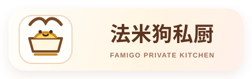
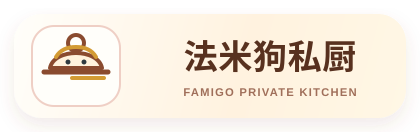
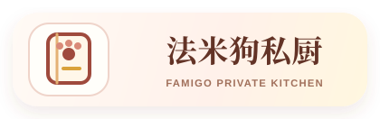
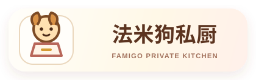
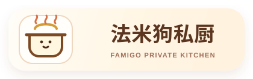
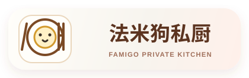
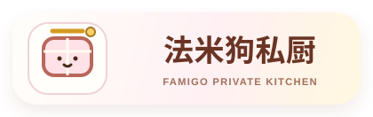
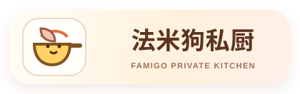
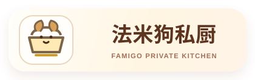

法米狗私厨 v1.4 大 logo 候选
已选入轮换：2、3、4、6、8、9、10。项目里的轮换清单会按这些编号每 7 天循环一次。
候选 1 · 厨师小狗
候选 2 · 小狗餐碗

候选 3 · 小狗餐盖

候选 4 · 爪印菜单

候选 5 · 围裙小狗

候选 6 · 汤锅小狗

候选 7 · 餐盘狗鼻

候选 8 · 小狗便当

候选 9 · 小狗煎锅

候选 10 · 小狗饭碗
